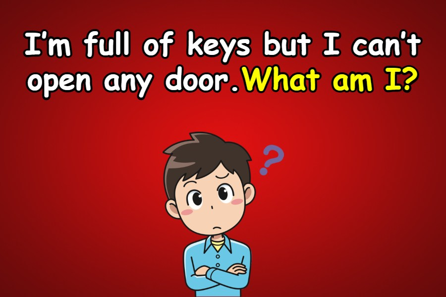

Riddles
- What has to be broken before you can use it?
An egg
- I’m tall when I’m young, and I’m short when I’m old. What am I?
A candle
- What month of the year has 28 days?
All of them
- What is full of holes but still holds water?
A sponge
- What question can you never answer yes to?
Are you asleep yet?
- What is always in front of you but can’t be seen?
The future
- There’s a one-story house in which everything is yellow. Yellow walls, yellow doors, yellow furniture. What color are the stairs?
There aren’t any—it’s a one-story house.
- What can you break, even if you never pick it up or touch it?
A promise
- What goes up but never comes down?
Your age
- A man who was outside in the rain without an umbrella or hat didn’t get a single hair on his head wet. Why?
He was bald
Thanks for guessing!
